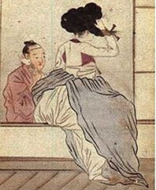
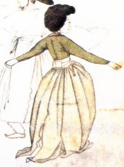

Traditional clothing of Korea
A hanbok (in South Korea) or Chosŏn-ot (in North Korea) is a traditional two piece Korean dress worn for formal or semi-formal traditional occasions and events such as festivals, celebrations, and ceremonies. It is characterized by its wrapped front top, long, high waisted skirt and its typically vibrant colours. Hanbok can be divided into royal dresses, official uniforms, bureaucratic uniforms, and civilian uniforms.
Although the term "hanbok" literally means "Korean clothing", in the modern day, "hanbok" usually refers specifically to the clothing worn and developed during the Joseon dynasty period by the upper classes. During this time, the clothing of Korea's rulers and aristocrats was heavily influenced by foreign and indigenous styles, resulting in many styles of clothing, such as the gwanbok worn by officials; in contrast, commoners wore a style of indigenous clothing distinct from that of the upper classes.
The hanbok can be traced back to the Three Kingdoms of Korea period, with roots in the peoples of what is now northern Korea and Manchuria.[37][38] Early forms of Hanbok can be seen in the art of Goguryeo tomb murals in the same period. From this time, the basic structure of hanbok, namely the jeogori jacket, baji pants, and the chima skirt, were established. Short, tight trousers and tight, waist-length jackets were worn by both men and women during the early years of the Three Kingdoms of Korea period. The basic structure and these basic design features of hanbok remain relatively unchanged to this day.
 As Silla unified the Three Kingdoms, various silks, linens, and fashions were imported from Tang China and Persia. In the process, the latest fashions trend of Luoyang, the second capital of Tang, were also introduced to Korea, where it became a uniquely Korean silhouette similar to the Western Empire silhouette. After the Korean unification by the Silla, Korean women of the aristocrat class started wearing the new style, popular not only in China but in all countries influenced by the Silk Road. The style, however, did not affect hanbok still used by the commoners, and its use faded during the Goryeo period, the next ruling state of Korea, and the use of hanbok was revived in the aristocrat class.
In the North-South States Period, Silla and Balhae adopted dallyeong, a circular-collar robe from ancient West Asia that was adopted by the Tang dynasty of China.[41] The dallyeong style from China was used as gwanbok, a formal attire for government officials, grooms, and dragon robe, a formal attire for royalty.
Hanbok went through significant changes under Mongol rule. After the Goryeo Dynasty (918–1392) signed a peace treaty with the Mongol Empire in the 13th century, Mongolian princesses who married into the Korean royal house brought with them Mongolian fashion which began to prevail in both formal and private life. As a result of this influence, the chima skirt was shortened, and jeogori was hiked up above the waist and tied at the chest with a long, wide ribbon, the goruem (instead of being belted) and the sleeves were curved slightly. Cultural exchange was not one way however. Goryeo had significant cultural influence on the Mongols court of the Yuan dynasty, the most visible of which was adoption of women's hanbok by the aristocrats, queens, and concubines of the Mongol court.
Early Joseon continued the women's fashion for baggy, loose clothing, such as those seen on the mural from the tomb of Bak Ik (1332–1398).[48] However, by the 16th century, the jeogori had shortened to the waist and appears to have become closer fitting, although not to the extremes of the bell-shaped silhouette of the 18th and 19th centuries.
Today's hanbok is the direct descendant of hanbok worn in the Joseon period, specifically the late 19th century. Hanbok had gone through various changes and fashion fads during the five hundred years under the reigns of Joseon kings and eventually evolved to what we now mostly consider typical hanbok.
Traditionally, women's hanbok consist of the jeogori (a blouse shirt or a jacket) and the chima (a full, wrap around skirt). The ensemble is often known as chima jeogori. Men's hanbok consist of jeogori and loose fitting baji (trousers).
Jeogori is the basic upper garment of the hanbok, worn by both men and women. It covers the arms and upper part of the wearer's body. The basic form of a jeogori consists of gil, git, dongjeong, goreum and sleeves. Gil (Hangul: 길) is the large section of the garment on both front and back sides, and git (Hangul: 깃) is a band of fabric that trims the collar. Dongjeong (Hangul: 동정) is a removable white collar placed over the end of the git and is generally squared off. The goreum (Hangul: 고름) are coat-strings that tie the jeogori. Women's jeogori may have kkeutdong (Hangul: 끝동), a different colored cuff placed at the end of the sleeves. Two jeogori may be the earliest surviving archaeological finds of their kind. One from a Yangcheon Heo clan tomb is dated 1400–1450, while the other was discovered inside a statue of the Buddha at Sangwonsa Temple (presumably left as an offering) that has been dated to the 1460s.
The form of Jeogori has changed over time. While men's jeogori remained relatively unchanged, women's jeogori dramatically shortened during the Joseon dynasty, reaching its shortest length at the late 19th century. However, due to reformation efforts and practical reasons, modern jeogori for women is longer than its earlier counterpart. Nonetheless the length is still above the waistline. Traditionally, goreum were short and narrow, however modern goreum are rather long and wide. There are several types of jeogori varying in fabric, sewing technique, and shape.
Chima refers to "skirt," which is also called sang (裳) or gun (裙) in hanja. The underskirt, or petticoat layer, is called sokchima. According to ancient murals of Goguryeo and an earthen toy excavated from the neighborhood of Hwangnam-dong, Gyeongju, Goguryeo women wore a chima with jeogori over it, covering the belt.
Although striped, patchwork, and gored skirts are known from the Goguryeo and Joseon periods, chima were typically made from rectangular cloth that was pleated or gathered into a skirt band. This waistband extended past the skirt fabric itself and formed ties for fastening the skirt around the body.
Sokchima was largely made in a similar way to the overskirts until the early 20th century when straps were added, later developing into a sleeveless bodice or 'reformed' petticoat. By the mid-20th century, some outer chima had also gained a sleeveless bodice, which was then covered by the jeogori.
Baji refers to the bottom part of the men's hanbok. It is the formal term for 'trousers' in Korean. Compared to western style pants, it does not fit tightly. The roomy design is aimed at making the clothing ideal for sitting on the floor. It functions as modern trousers do, but nowadays the term baji is commonly used in Korea for any kinds of pants. There is a band around the waistline of a baji for tying in order to fasten. Baji can be unlined trousers, leather trousers, silk pants, or cotton pants, depending on style of dress, sewing method, embroidery and so on.
Po or Pho is a generic term referring to an outer robe or overcoat, which was a common style from the Three Kingdoms of Korea period until the late Joseon period. A belt was used until it was replaced by a ribbon during late Joseon dynasty. Durumagi is a variety of po that was worn as protection against cold. It had been widely worn as an outer robe over jeogori and baji. It is also called jumagui, juchaui, or juui. A different overcoat derived from Tang dynasty styles was adopted among the elites of Unified Silla and eventually evolved into Gwanbok.
Jokki (Korean: 조끼) is a type of vest, while magoja is an outer jacket. Although jokki and magoja were created at the end of the Joseon dynasty (1392–1897), directly after which Western culture began to affect Korea, the garments are considered traditional clothing. Each is additionally worn over jeogori for warmth and style. Magoja clothing was originally styled after the clothing of Manchu people, and was introduced to Korea after Heungseon Daewongun, the father of King Gojong, returned from his political exile in Tianjin in 1887. Magoja were derived from the magwae he wore in exile because of the cold climate there. Due to its warmth and ease of wear, magoja became popular in Korea. It is also called "deot jeogori" (literally "an outer jeogori") or magwae.
Magoja does not have git, the band of fabric trimming the collar, nor goreum (tying strings), unlike jeogori and durumagi (an overcoat). Magoja was originally a male garment but later became unisex. The magoja for men has seop (Korean: 섶, overlapped column on the front) and is longer than women's magoja, so that both sides are open at the bottom. A magoja is made of silk and is adorned with one or two buttons which are usually made from amber. In men's magoja, buttons are attached to the right side, as opposed to the left as in women's magoja.
At first, women wore the magoja for style rather than as a daily outfit, and especially kisaeng wore it often. It is made of silk, and the color for women tends to be a neutral color to harmonize with other garments such as jeogori and chima, which are worn together. In spring and autumn, pastels used in women's magoja are matched with jeogori by color. Men's magoja during spring and summer are jade, green, gray, dark grey
Traditionally, Kkachi durumagi (literally "a magpie's overcoat") were worn as seolbim (Hangul: 설빔), new clothing and shoes worn on Korean New Year, while at present, it is worn as a ceremonial garment for dol, the celebration for a baby's first birthday. It is a children's colorful overcoat. It was worn mostly by young boys. The clothes is also called obangjang durumagi which means "an overcoat of five directions". It was worn over jeogori (a jacket) and jokki (a vest), while the wearer could put jeonbok (a long vest) over it. Kkachi durumagi was also worn along with headgear such as bokgeon (a peaked cloth hat), hogeon (peaked cloth hat with a tiger pattern) for young boys or gulle (decorative headgear) for young girls.
Hanbok is classified according to its purposes: everyday dress, ceremonial dress, and special dress. Ceremonial dresses are worn on formal occasions, including a child's first birthday, a wedding, or a funeral. Special dresses are made for shamans and officials.
Hanbok was worn daily up until just 100 years ago, it was originally designed to facilitate ease of movement. But now, it is only worn on festive occasions or special anniversaries. It is a formal dress and most Koreans keep a hanbok for special times in their life such as wedding, Chuseok (Korean Thanksgiving), and Seollnal (Korean New Year's), Children wear hanbok to celebrate their first birthday (Hangul: 돌잔치) etc. While the traditional hanbok was beautiful in its own right, the design has changed slowly over the generations. The core of hanbok is its graceful shape and vibrant colors, it is hard to think of hanbok as everyday wear but it is slowly being revolutionized through the changing of fabrics, colors and features, reflecting the desire of people.
Women's Traditional Hanbok consist of jeogori, which is a shirt or a jacket, and chima dress, which is a wrap around skirt that is usually worn full. A man's hanbok consists of jeorgori (jacket) and baggy pants that are called baji. Also there are additional clothing Po which is the outer coat, or robe, jokki which is a type of vest and magoja which is an outer jacket worn over jeogori for warmth and style.
The color of hanbok symbolized social position and marital status. Bright colors, for example, were generally worn by children and girls, and muted hues by middle aged men and women. Unmarried women often wore yellow jeogori and red chima while matrons wore green and red, and women with sons donned navy. The upper classes wore a variety of colors. Contrastingly, commoners were required to wear white, but dressed in shades of pale pink, light green, gray and charcoal on special occasions.
Also, the status and position can be identified by the material of the hanbok. The upper classes dressed in hanbok of closely woven ramie cloth or other high grade lightweight materials in warmer months and of plain and patterned silks throughout the remainder of the year. Commoners, in contrast, were restricted to cotton. Patterns were embroidered on hanbok to represent the wishes of the wearer. Peonies on a wedding dress, represented a wish for honor and wealth. Lotus flowers symbolized a hope for nobility, and bats and pomegranates showed the desire for children. Dragons, phoenixes, cranes and tigers were only for royalty and high-ranking officials.
https://en.wikipedia.org/wiki/Hanbok#Construction_and_design